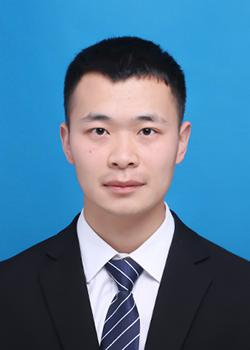

| 姓名：叶睿卿 | 出生年月：2000.08 |  |
| 民族：汉 | 身高：172cm | |
| 电话：18856680918 | 政治面貌：积极分子 | |
| 邮箱：943811140@qq.com | 本科毕业院校：浙江工业大学 | |
| 学历：硕士 | 硕士毕业院校：哈尔滨工业大学 |
2018.09-2022.06 浙江工业大学 自动化
主修课程：
自动控制理论、现代控制理论、计算机组成原理、数据结构、C语言、matlab、python程序设计、数据库、单片机等。
2022.09-至今 哈尔滨工业大学 控制工程
主修课程：
自适应控制、矩阵分析、数值分析。
2023.3-2023.9 中科院新技术基地 外协
负责程序接口和通信，利用restful通信协议调用底层算法，打包数据为json进行发送，并且操作数据库的读写。
2019.03-2021.06 浙江工业大学 自动化二班班长
2019.06-2020.06 浙江工业大学 游泳校队
2023.06-至今 哈尔滨工业大学 游泳航天学院院队
大学计算机C++二级；
大学英语六级；
普通话二乙。
研究生学业特等奖学金；
专利：一种用于近距离航天器轨道脉冲博弈的航天器控制方法；
论文：Spacecraft Chase and Escape Game Based on PPO Algorithm；